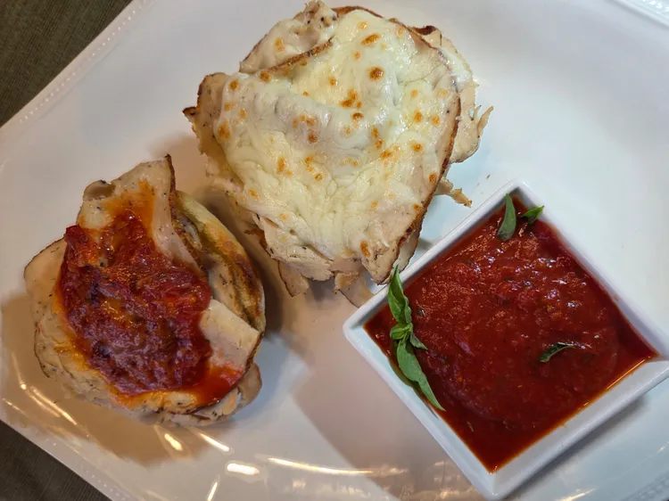

Home
Lazy Chicken Parm Sandwich

This lazy chicken parm sandwich is perfect for when you are craving chicken parmesan but
not all the fuss (and mess) it takes to make the full dish. Try this streamlined sandwich
version. It comes together quickly and delivers all the flavor of the classic dish.
Ingredients
- 1 ciabatta roll
- 1 tablespoon butter
- 1 dash garlic powder (optional)
- 4 thin slices deli chicken
- 1/4 cup mozzarella cheese
- 1 cup marinara sauce, divided
- 1 tablespoon grated parmesan cheese, or to taste
Steps
-
Turn on the oven's broiler and set a rack about 6 inches from the heat source.
Slice ciabatta roll in half. Butter cut sides and sprinkle with garlic powder. Place
on a baking sheet.
-
Broil in the oven until just toasted golden brown 1 to 2 minutes. Remove from
the oven.
-
Layer 2 slices of deli chicken on both sides. Sprinkle mozzarella cheese over
chicken on 1 half, then spoon marinara sauce on the other half.
-
Return to the oven and broil until cheese is melted and sauce is heated through,
about 5 minutes. Remove and sprinkle with parmesan cheese, then close the
sandwich halves together. Serve with additional marinara warmed to taste.